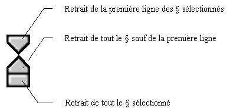
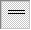
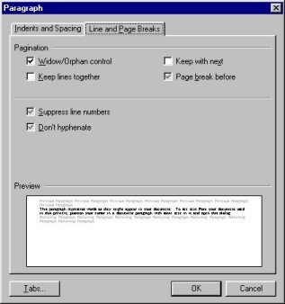
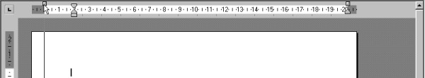

La mise en forme des paragraphes avec AbiWord
Après avoir vu dans un premier temps la mise en forme des caractères,
voyons maintenant la mise en forme des paragraphes. AbiWord permet
plusieurs mises en forme de paragraphes :
* Les alignements
* Les retraits
* Les espacements
* Les interlignes
Voyons donc plus en détail ces différentes possibilités.
Quatre type d'alignements sont disponibles sous AbiWord.
- L'alignement à gauche:
C'est l'alignement par défaut choisi sous AbiWord. Ainsi tous les
paragraphes sont alignés à gauche. Dans le cas contraire, pour
aligner à gauche il existe trois manières différentes:
- Aller dans le menu Format puis cliquer sur "Alignement"
puis "à Gauche"ou
- Cliquer sur l'icone "Alignement à gauche"
de la barre d'outils Mise en forme ou
- Utiliser le raccourci clavier en appuyant simultanément sur les
touches "Ctrl" et "L".
- L'alignement centré:
Pour centrer un paragraphe, il existe trois manières différentes:
- Aller dans le menu Format puis cliquer sur "Alignement"
puis "Centré"ou
- Cliquer sur l'icone "Paragraphe centré"
 de la barre d'outils Mise en forme ou
de la barre d'outils Mise en forme ou
- Utiliser le raccourci clavier en appuyant simultanément sur les
touches "Ctrl" et "E".
- L'alignement à droite:
Pour aligner à droite un paragraphe, il existe trois
manières différentes:
- Aller dans le menu Format puis cliquer sur "Alignement"
puis "à Droite"ou
- Cliquer sur l'icone "Alignement à droite"
de la barre d'outils Mise en forme ou
- Utiliser le raccourci clavier en appuyant simultanément sur les
touches "Ctrl" et "R".
- L'alignement justifié:
Un paragraphe justifié sera aligné à la fois sur la gauche et
sur la droite. Pour justifier un paragraphe, il existe trois manières
différentes:
- Aller dans le menu Format puis cliquer sur "Alignement"
puis "Justifié"ou
- Cliquer sur l'icone "Paragraphe justifié"
de la barre d'outils Mise en forme ou
- Utiliser le raccourci clavier en appuyant simultanément sur les
touches "Ctrl" et "J".
Les retraits s'effectuent par rapport aux marges de droite et de gauche
du document. Ils peuvent être positifs ou négatifs selon que vous
souhaitez écrire ou non dans la marge. Les retraits gauche se
définissent à l'aide de la barre des retraits située à gauche sur la
règle.
Il suffit soit de sélectionner les paragraphes à modifier ou de
positionner le curseur d'insertion dans le paragraphe à modifier puis de
cliquer sur l'un des trois retraits de la barre des retraits à gauche
puis de faire glisser.

Les retraits droits quant à eux se définissent en
cliquant sur la barre des retraits à gauche de la règle puis en faisant
glisser.

Les espacement permettent de définir l'espacement entre les
différents paragraphes. Par défaut, il n'existe aucun espacement. La
manière la plus simple de définir un espacement est de cliquer sur l'icone
"Espacement avant: 12 pt" de
la barre d'outils Mise en forme. Pour revenir à un espacement nul,
cliquer sur l'icone "Espacement avant: aucun" de
cette même barre d'outils.
Les interlignes permettent eux de définir l'espacement entre les
lignes d'un même paragraphe. Trois types d'interlignes sont proposés en
plus des interlignes personnalisés (que nous verrons plus tard)
- L'interligne simple: c'est l'interligne par défaut. L'icone
"Interligne simple" de
la barre d'outils Mise en forme est activé par défaut. Sinon, il
suffit de cliquer dessus.
- L'interligne une demi ligne. Cliquer sur l'icone "Interligne:
1.5 lignes"
de la barre d'outils Mise en forme.
- L'interligne double. Cliquer sur l'icone "Interligne
double"
de la barre d'outils Mise en forme.
Les mises en formes de paragraphes (alignements, retraits,
espacement et interlignes) peuvent intervenir:
* En sélectionnant les paragraphes souhaités puis en leur
appliquant la mise en forme.
* En appliquant la mise en forme au niveau du point d'insertion I . Ceci
dit, une commande de mise en forme ne se désactive pas automatiquement.
Il faudra la désactiver pour reprendre une saisie "normale".
PS: Pour définir les mises en formes d'un paragraphe seulement, il n y a pas besoin
de sélectionner le paragraphe. Il suffit juste de placer le point
d'insertion I dans ce paragraphe puis de choisir la mise en forme
souhaitée (alignements, retraits, espacement ou interlignes).
Toutes ces commandes ci-dessus sont récapitulées dans la boite de
dialogue "Format". Pour retrouver cette boite de dialogue, il
existe deux solutions:
- Aller dans le menu Format puis cliquer sur "Paragraphe..."
ou
- Effectuer un clic droit de la souris sur un paragraphe puis cliquer
sur la dernière option (Paragraphe...) du menu contextuel.
Cette fenêtre est constituée de deux onglets:
* L'onglet Indent and spacing (retraits
et espacements)
* L'onglet Line and page brake (lignes et sauts de page)
En bas de cette fenêtre
se trouvent trois boutons
* Le bouton "Tabs" permet de définir les
tabulations.
(non disponible dans la version 0.7.8
d'AbiWord)
* Le bouton "OK" permet de valider les changements.
* Le bouton "Cancel" (Annuler) qui ne prend pas en compte les
modifications.
-
L'onglet "Retraits et espacements" contient les rubriques suivantes:

* La rubrique "Alignement" définit les
alignements gauche, centré, droit et justifié.
* La rubrique "Indentation" définit les retraits à gauche et
à droite, positifs ou négatifs
* La rubrique "Spacing" définit les espacement entre les
paragraphes (avant et après) de même que l'espacement entre les lignes
(personnalisable)
* La fenêtre "Preview" montre un aperçu au fur et à mesure
que les modifications sont prises.
-
L'onglet "Lignes et sauts de page" contient les rubriques suivantes:

* La rubrique "Pagination" contient les
options suivantes non vues précédemment:
-
Widow/Orphan control (Gestion des Veuves et
Orphelins). Si cette option est cochée, les "lignes
veuves" (c'est la première ligne d'un paragraphe située à
la fin d'une page) et "les lignes orphelines" (c'est la
dernière ligne d'un paragraphe située au début d'une page) sont
évitées.
-
Keep lines together (Garder les lignes ensemble).
Pour éviter qu'un paragraphe soit "coupé en deux" s'il se trouve sur une rupture de page, cocher cette option.
-
Keep with next (Garder les paragraphes ensemble).
Pour éviter que deux paragraphes soient séparés par une rupture
de page, cocher cette option.
-
Page break before (Saut de page avant). Pour qu'un
paragraphe se situe en haut d'une page quelque soit sa position
dans le texte, cocher cette option.
* L'autre rubrique:
-
Supress line numbers (Supprimer les numéros de
lignes)
-
Don't hyphenate (Ne pas couper les mots) Si cette
option est cochée, elle désactive la coupure automatique des
mots dans un paragraphe.
* La fenêtre "Preview" montre un aperçu au fur et à mesure
que les modifications sont prises.
Il est possible avec AbiWord de définir les marges
horizontales d'un document. Ainsi, les marges de gauche et de droite se
définissent en cliquant sur les boutons de retrait de
marge puis en les faisant glisser.

|